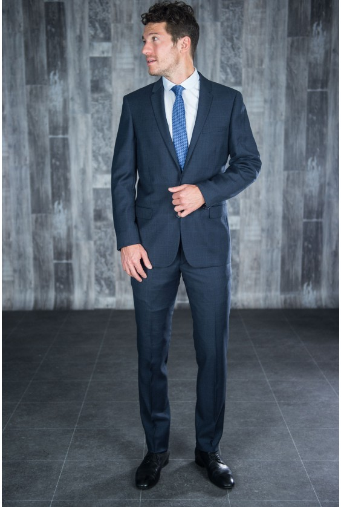

What Inspires Me
I’m inspired and motivated by a lot of things. First of all, I’m passionate about cars. So I try to make the maximum number of car shows by going from the Paris Motor Show to Chantilly’s Richard Mille art et elegance. I am also attracted to sports and especially tennis, which I have been practicing for 5 years now.Finally, food is one of the things that is most important to me. Living in France, I have the opportunity to taste refined gastronomy
Travel
I love travelling very much and thanks to my year of césure, I was able to go to Tokyo, New York, Los Angeles, Dubai, Toronto... In my opinion, travel helps to grow and develop personally. Similarly, contact with other cultures allows us to understand a little better how the world works.
Art
I am passionate about beautiful things and especially: art. Thanks to our location, we have access to many Parisian museums. So I strongly recommend the last exhibition of Daniel Arsham!